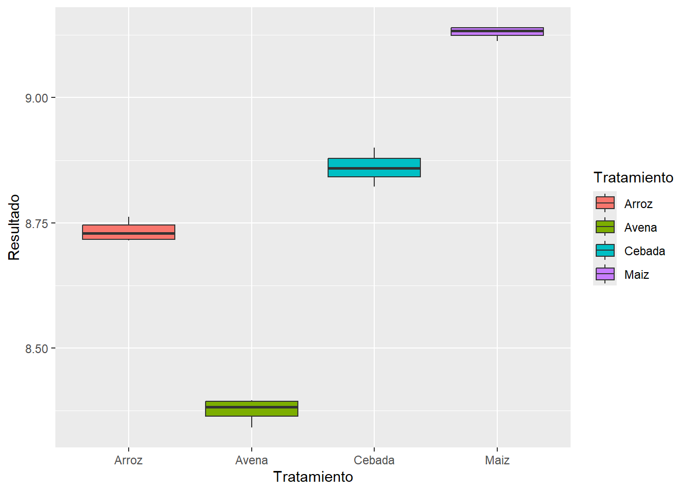
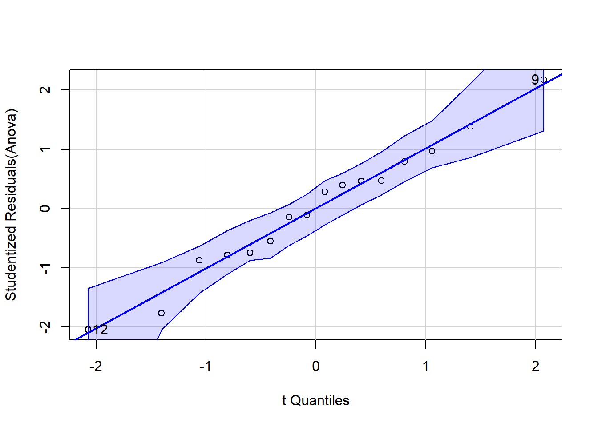
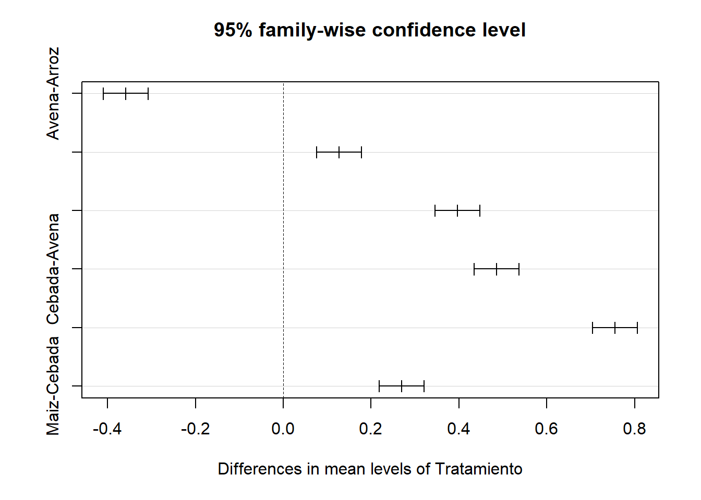

5Parte II: Aplicaciones de R en Microbiología Industrial y Análisis de Datos
5.1 Uso de R en Microbiología Industrial
El uso de R como herramienta de análisis estadístico en la microbiología industrial ha experimentado un crecimiento exponencial en la última década, según Mohammadi et al. (2019) R proporciona una plataforma versátil que permite analizar datos complejos derivados de experimentos microbiológicos, facilitando la identificación de patrones de crecimiento microbiano, optimización de condiciones de cultivo y evaluación de la producción de metabolitos secundarios, lo que resulta crucial para el desarrollo y mejora de procesos biotecnológicos en entornos industriales.
McMurdie y Holmes (2013) desarrollaron el paquete phyloseq, el cual ha transformado el análisis de datos de secuenciación en estudios de comunidades microbianas, permitiendo la integración de información taxonómica, filogenética y de abundancia en un solo entorno analítico; este avance ha sido fundamental para comprender la dinámica de poblaciones microbianas en procesos industriales como: el tratamiento de aguas residuales, la producción de biocombustibles y la fermentación alimentaria.
Por otra parte, el paquete microbiome, descrito por Lahti y Shetty (2017) (Reeder et al. 2021), proporciona herramientas especializadas para el análisis de datos metagenómicos, facilitando la caracterización de comunidades microbianas y sus funciones metabólicas en entornos industriales, lo que resulta esencial para la optimización de bioprocesos y el control de calidad en la industria alimentaria.
El diseño experimental en microbiología industrial se ha beneficiado significativamente de la aplicabilidad de R, permitiendo planificar y analizar experimentos de manera más rigurosa y eficiente, el paquete agricolae, desarrollado por de Mendiburu (2021) (Zhou et al. 2012) es utilizado para la implementación de diseños experimentales complejos como: bloques aleatorizados y diseños factoriales entre otros, al tiempo que frecuentemente son utilizados en estudios de optimización de medios de cultivo, condiciones de fermentación y producción de enzimas microbianas.
Complementariamente, Ritz y Streibig (2005) presentaron el paquete drc (Dose-Response Curves), que ha facilitado el análisis de Curvas dosis-respuesta en estudios de inhibición microbiana, pruebas de susceptibilidad a antimicrobianos y evaluación de compuestos bioactivos producidos por microorganismos, proporcionando herramientas estadísticas robustas para cuantificar y modelar respuestas biológicas a diferentes tratamientos, lo cual es fundamental en el desarrollo de nuevos productos biotecnológicos.
Gracias al paquete ggplot2 desarrollado por Wickham (2016), el cual ha permitido la creación de gráficos elegantes y altamente informativos que facilitan la interpretación de resultados experimentales; en particular, la representación gráfica de cinéticas de crecimiento microbiano, producción de metabolitos y análisis multivariantes se ha vuelto más accesible e intuitiva para investigadores en el campo; de manera similar el paquete ggtree, creado por Yu et al. (2017), ha revolucionado la visualización de datos filogenéticos en estudios de diversidad microbiana industrial, permitiendo representar relaciones evolutivas entre microorganismos de interés biotecnológico y correlacionarlas con características fenotípicas relevantes para procesos industriales, lo que facilita la selección de cepas microbianas con potencial biotecnológico.
Expandir para aprender son el analis de datos ómicos
El análisis de datos ómicos en microbiología industrial se ha visto significativamente potenciado gracias al aporte de Love et al. (2014) quienes introdujeron DESeq2, un paquete que ha transformado el análisis de datos de RNA-seq en estudios transcriptómicos de microorganismos industriales, permitiendo identificar genes diferencialmente expresados bajo diversas condiciones de cultivo o modificaciones genéticas; lo que contribuye a la mejora de cepas microbianas industriales y a optimizar rutas metabólicas de interés comercial; paralelamente Rohart et al. (2017) desarrollaron el paquete mixOmics, el cual facilita la integración de múltiples conjuntos de datos ómicos, como:
transcriptómica,
proteómica y
metabolómica,
proporcionando una visión holística de los sistemas microbianos en contextos industriales, lo que permite desentrañar complejas redes regulatorias y metabólicas que subyacen a procesos biotecnológicos importantes como de compuestos bioactivos..
Expand to learn more about where the data was collected
Data were collected and made available by Dr. Kristen Gorman and the Palmer Station, Antarctica LTER, a member of the Long Term Ecological Research Network.
González-Peña, D., Dudzik, D., García, A., Legido-Quigley, C., & Barbas, C. (2021). R in LC-MS-based metabolomics: A review of packages, tutorials, and case studies. Metabolites, 11(10), 672. https://doi.org/10.3390/metabo11100672Esta referencia esta mal
Zhou, B., Xiao, J. F., Tuli, L., & Ressom, H. W. (2012). LC-MS-based metabolomics. Molecular BioSystems, 8(2), 470–481. https://doi.org/10.1039/c1mb05350g ( es esta ???)
Lahti, L., & Shetty, S. (2017). microbiome R package. Tools Microbiome Anal. R. http://microbiome.github.io/microbiomeCambiarla mejor por la que sigue???
Reeder, J., Huang, M., Kaminker, J. S., & Paulson, J. N. (2021). MicrobiomeExplorer: an R package for the analysis and visualization of microbial communities. Bioinformatics (Oxford, England), 37(9), 1317–1318. https://doi.org/10.1093/bioinformatics/btaa838 ( es esta ???)
Love, M. I., Huber, W., & Anders, S. (2014). Moderated estimation of fold change and dispersion for RNA-seq data with DESeq2. Genome Biology, 15(12), 550. https://doi.org/10.1186/s13059-014-0550-8
McMurdie, P. J., & Holmes, S. (2013). phyloseq: An R package for reproducible interactive analysis and graphics of microbiome census data. PLOS ONE, 8(4), e61217. https://doi.org/10.1371/journal.pone.0061217
Mohammadi, R., Ghomi, S. M. T. F., & Nazari, F. (2019). The application of R software for the assessment of microbial fermentation processes. Journal of Microbiological Methods, 156, 54-58. https://doi.org/10.1016/j.mimet.2018.12.003
Rohart, F., Gautier, B., Singh, A., & Lê Cao, K. A. (2017). mixOmics: An R package for ’omics feature selection and multiple data integration. PLOS Computational Biology, 13(11), e1005752. https://doi.org/10.1371/journal.pcbi.1005752
Yu, G., Smith, D. K., Zhu, H., Guan, Y., & Lam, T. T. Y. (2017). ggtree: An R package for visualization and annotation of phylogenetic trees with their covariates and other associated data. Methods in Ecology and Evolution, 8(1), 28-36. https://doi.org/10.1111/2041-210X.12628
5.2 Análisis Bibliométrico con RStudio® (Un ejemplo concreto de análisis de datos con R)
5.3 Fundamentos del Diseño Experimental (Introducir los principios del diseño experimental)
5.4 Tipos de diseños experimentales (Expandir sobre los diferentes tipos de diseños)
5.5 Diseño de experimentos en RStudio® (Aplicar los conceptos de diseño experimental en R)
5.5.1 Diseño completamente al azar
Problema
Escibrir los datos del problema y la bibliografci de donde se saco la información.
5.5.2 Estructura de la base de datos
La base de datos utilizada en este análisis corresponde a los resultados de un experimento agrícola que evalúa el comportamiento de cuatro cultivos diferentes bajo condiciones similares de manejo. La tabla contiene tres columnas principales:
Variable
Descripción
Tratamiento
Tipo de cultivo evaluado. Incluye cuatro niveles: Arroz, Avena, Cebada y Maíz.
Repetición
Número de repetición del tratamiento (del 1 al 4). Permite el análisis estadístico con replicación.
Resultado
Valor numérico correspondiente a la variable respuesta medida (por ejemplo, rendimiento en kg/ha).
Pasos para trabajar con R o RStudio:
Especificar el directorio que me interesa donde se encuentra la base de datos.
Antes e inciar
R lee / (slash o division) y no el de Windows \
En R, setwd() es una función que significa “set working directory” o “establecer el directorio de trabajo”. Se utiliza para definir la carpeta predeterminada en la que R buscará archivos para leer y donde guardará archivos por defecto.
Por ejemplo: setwd (“D:/OneDrive - Universidad de Santander/Material Docente 2025/CodigoR”“)
Lectura de datos
library(readxl)
Warning: package 'readxl' was built under R version 4.3.3
DCA <-read_excel("C:/Users/coordinador.analitic/OneDrive - Universidad de Santander/Material_Profesoral_2025/CodigoR/DCA2.xlsx")View(DCA)attach(DCA)names(DCA)
Min. 1st Qu. Median Mean 3rd Qu. Max.
8.341 8.635 8.792 8.775 8.954 9.141
Análisis de la Varianza - ANOVA
Cuando se desea saber si varios grupos (Ej. tratamientos) presentan diferencias reales en sus promedios, una de las herramientas estadísticas más utilizadas es el Análisis de la Varianza, conocido como ANOVA. Esta técnica permite examinar si los valores medios de tres o más grupos son lo suficientemente distintos como para concluir que no se trata de simples fluctuaciones aleatorias.
El enfoque de ANOVA se basa en comparar dos tipos de variación: por un lado, la variabilidad que se observa entre los distintos grupos, y por otro, la variabilidad que existe dentro de cada grupo individual.
Si al analizar los datos se encuentra que la variación entre los grupos supera notablemente la que ocurre dentro de ellos, es razonable pensar que las diferencias en los promedios reflejan algo más que el azar. En cambio, si la variabilidad interna es más pronunciada, entonces es posible que las diferencias observadas no sean significativas y respondan a variaciones normales del comportamiento de los datos.
Df Sum Sq Mean Sq F value Pr(>F)
Tratamiento 3 1.1794 0.3931 660.4 1.39e-13 ***
Residuals 12 0.0071 0.0006
---
Signif. codes: 0 '***' 0.001 '**' 0.01 '*' 0.05 '.' 0.1 ' ' 1
Interpretación: La prueba ANOVA muestra diferencias significativas entre los tratamientos (p < 0.001). El valor de F (660.4) indica que la variación entre tratamientos es mucho mayor que la variación dentro de los grupos, lo que sugiere que al menos uno de los tratamientos afecta significativamente el resultado.
Modelo Lineal
modelo=lm(Resultado~(Tratamiento))summary(modelo)
Call:
lm(formula = Resultado ~ (Tratamiento))
Residuals:
Min 1Q Median 3Q Max
-0.038397 -0.016205 0.001983 0.012013 0.040116
Coefficients:
Estimate Std. Error t value Pr(>|t|)
(Intercept) 8.73389 0.01220 715.921 < 2e-16 ***
TratamientoAvena -0.35848 0.01725 -20.778 8.93e-11 ***
TratamientoCebada 0.12669 0.01725 7.343 8.94e-06 ***
TratamientoMaiz 0.39630 0.01725 22.970 2.75e-11 ***
---
Signif. codes: 0 '***' 0.001 '**' 0.01 '*' 0.05 '.' 0.1 ' ' 1
Residual standard error: 0.0244 on 12 degrees of freedom
Multiple R-squared: 0.994, Adjusted R-squared: 0.9925
F-statistic: 660.4 on 3 and 12 DF, p-value: 1.393e-13
Interpretación: El modelo lineal confirma que el tratamiento influye significativamente en los resultados (p < 0.001). El tratamiento “Arroz” actúa como referencia, con una media estimada de 8.73. Comparado con este:
Avena presenta una media significativamente menor (–0.36, p < 0.001).
Cebada muestra un aumento moderado (+0.13, p < 0.001).
Maíz tiene el mayor incremento (+0.40, p < 0.001).
El modelo explica el 99.4% de la variabilidad en los datos (R² = 0.994), y el error estándar residual es bajo (0.0244), lo que indica un ajuste excelente.
Gráfico Boxplot
Se toma el Tratamiento para hacer un boxplot utilizando la variable “Resultado”, pero primero se transformar en factor la variable Tratamiento:
library(ggplot2)DCA$Treatamiento<-factor(DCA$Tratamiento) #transformamos una variable númerica en un factor categóricoggplot(DCA, aes(x = Tratamiento, y = Resultado, fill=Tratamiento)) +geom_boxplot()

Interpretación: Las diferencias en las medianas entre tratamientos son claras y consistentes con los resultados del ANOVA y del modelo lineal, lo que sugiere un efecto significativo del tipo de cultivo sobre la variable resultado.
Supuestos del diseño
Normalidad: Para verificar la normalidad de los residuos utilizaremos la prueba de Shapiro-Wilks cuyo script es el siguiente:
shapiro.test(residuals(Anova))
Shapiro-Wilk normality test
data: residuals(Anova)
W = 0.97944, p-value = 0.959
Interpretación: El test de Shapiro-Wilk aplicado a los residuos del modelo ANOVA devuelve un valor de p = 0.959, que es mucho mayor que 0.05. Esto indica que no hay evidencia estadística para rechazar la hipótesis nula de normalidad. Por lo tanto, se concluye que los residuos del modelo siguen una distribución normal, cumpliendo así uno de los supuestos fundamentales del análisis de varianza.
Gráficos para evaluar la normalidad
Para construir el gráfico QQ (QQ plot) y evaluar la normalidad de los datos, se utiliza la función correspondiente del paquete car. Si no está instalado previamente, es necesario instalar también el paquete auxiliar carData.
library(car) #Grafico de QQ plotlibrary(carData)library(dplyr)library(purrr)qqPlot(Anova)

[1] 9 12
Interpretación: El gráfico QQ muestra que los residuos estandarizados del modelo ANOVA se alinean adecuadamente con la línea diagonal, lo que indica que su distribución es aproximadamente normal. La mayoría de los puntos se ubican dentro de la banda de confianza, y no se observan desviaciones sistemáticas. Esta gráfica complementa el resultado del test de Shapiro-Wilk (p = 0.959), confirmando que se cumple el supuesto de normalidad de los residuos en el modelo.
Homocedasticidad: Para evaluar el supuesto de homogeneidad de varianzas entre los grupos (homocedasticidad), se aplicará la prueba de Bartlett, la cual es apropiada cuando los datos provienen de poblaciones aproximadamente normales. Esta prueba contrasta la hipótesis nula de igualdad de varianzas frente a la alternativa de varianzas diferentes. El procedimiento se implementa mediante el siguiente script:
bartlett.test(Resultado~Tratamiento, data=DCA)
Bartlett test of homogeneity of variances
data: Resultado by Tratamiento
Bartlett's K-squared = 2.2722, df = 3, p-value = 0.5179
Interpretación: Dado que el valor de p es mayor que 0.05 (p = 0.5179), no se rechaza la hipótesis nula. Por tanto, se asume que las varianzas entre los tratamientos son homogéneas, cumpliéndose este supuesto clave para el análisis de varianza y para la aplicación de pruebas a posteriori como LSD.
Pruebas aposteriori Para identificar diferencias específicas entre las medias de los tratamientos, una vez detectada significancia en el análisis de varianza, se aplicará una prueba de comparaciones múltiples a posteriori. En este caso, se empleará la técnica LSD (Least Significant Difference), que permite realizar comparaciones pareadas entre tratamientos asumiendo homogeneidad de varianzas.
La implementación de esta prueba requiere la carga del paquete agricolae, utilizando el siguiente script. Instalación si es necesario: install.packages(“agricolae”). Carga del paquete: library(agricolae).
library(agricolae)Grupos <-LSD.test(y = Anova, trt ="Tratamiento", group = T, console = T)
Study: Anova ~ "Tratamiento"
LSD t Test for Resultado
Mean Square Error: 0.0005953124
Tratamiento, means and individual ( 95 %) CI
Resultado std r se LCL UCL Min Max
Arroz 8.733890 0.02192214 4 0.01219951 8.707310 8.760471 8.715318 8.762183
Avena 8.375414 0.02519485 4 0.01219951 8.348834 8.401995 8.341039 8.395990
Cebada 8.860578 0.03330518 4 0.01219951 8.833998 8.887159 8.822181 8.900695
Maiz 9.130190 0.01251613 4 0.01219951 9.103609 9.156770 9.113429 9.140539
Q25 Q50 Q75
Arroz 8.717232 8.729030 8.745688
Avena 8.364419 8.382314 8.393309
Cebada 8.842075 8.859719 8.878222
Maiz 9.124249 9.133395 9.139335
Alpha: 0.05 ; DF Error: 12
Critical Value of t: 2.178813
least Significant Difference: 0.03759044
Treatments with the same letter are not significantly different.
Resultado groups
Maiz 9.130190 a
Cebada 8.860578 b
Arroz 8.733890 c
Avena 8.375414 d
Intrepretación: La prueba LSD reveló que los cuatro tratamientos presentan diferencias estadísticamente significativas entre sus medias. El tratamiento Maíz obtuvo el mayor rendimiento promedio, seguido por Cebada, Arroz y Avena, en ese orden descendente.
Otra opcion cuando cambiamos el argumento “group” a F(false), se interpreta a mi parecer de forma mas sencilla la diferencia entre las medias.A continuación, se presentan las pruebas de comparaciones múltiples a posteriori aplicadas al modelo de ANOVA ajustado. Se incluyen la prueba LSD, la prueba de Tukey y el test de Scheffé, las cuales permiten identificar diferencias estadísticamente significativas entre los tratamientos evaluados:
Grupos<-LSD.test(y = Anova, trt ="Tratamiento", group = F, console = T)
Study: Anova ~ "Tratamiento"
LSD t Test for Resultado
Mean Square Error: 0.0005953124
Tratamiento, means and individual ( 95 %) CI
Resultado std r se LCL UCL Min Max
Arroz 8.733890 0.02192214 4 0.01219951 8.707310 8.760471 8.715318 8.762183
Avena 8.375414 0.02519485 4 0.01219951 8.348834 8.401995 8.341039 8.395990
Cebada 8.860578 0.03330518 4 0.01219951 8.833998 8.887159 8.822181 8.900695
Maiz 9.130190 0.01251613 4 0.01219951 9.103609 9.156770 9.113429 9.140539
Q25 Q50 Q75
Arroz 8.717232 8.729030 8.745688
Avena 8.364419 8.382314 8.393309
Cebada 8.842075 8.859719 8.878222
Maiz 9.124249 9.133395 9.139335
Alpha: 0.05 ; DF Error: 12
Critical Value of t: 2.178813
Comparison between treatments means
difference pvalue signif. LCL UCL
Arroz - Avena 0.3584760 0 *** 0.3208855 0.39606642
Arroz - Cebada -0.1266884 0 *** -0.1642788 -0.08909794
Arroz - Maiz -0.3962994 0 *** -0.4338899 -0.35870901
Avena - Cebada -0.4851644 0 *** -0.5227548 -0.44757392
Avena - Maiz -0.7547754 0 *** -0.7923659 -0.71718499
Cebada - Maiz -0.2696111 0 *** -0.3072015 -0.23202064
Interpretación: todas las diferencias entre tratamientos son altamente significativas (p < 0.001). Esto confirma que ninguno de los tratamientos comparte una media similar.
Interpretación: La prueba de Tukey también confirma diferencias estadísticamente significativas en todas las comparaciones, manteniendo control del error familiar. El gráfico generado muestra intervalos de confianza del 95% que no se solapan, lo que respalda visualmente los resultados.
plot(TukeyHSD(Anova))

Interpretación: El gráfico muestra los intervalos de confianza del 95 % para las diferencias de medias entre los tratamientos, ajustados por comparaciones múltiples (family-wise). Ninguno de los intervalos cruza la línea vertical en cero, lo cual indica que todas las comparaciones entre pares de tratamientos son estadísticamente significativas. La diferencia más grande se observa entre Maíz y Avena, mientras que la más pequeña, aunque significativa, es entre Cebada y Arroz. Este resultado es coherente con los análisis previos (ANOVA, LSD y Scheffé), y respalda que cada tratamiento tiene un efecto significativamente distinto sobre la variable “Resultado”.
scheffe.test(Anova, "Tratamiento",console=TRUE)
Study: Anova ~ "Tratamiento"
Scheffe Test for Resultado
Mean Square Error : 0.0005953124
Tratamiento, means
Resultado std r se Min Max Q25 Q50
Arroz 8.733890 0.02192214 4 0.01219951 8.715318 8.762183 8.717232 8.729030
Avena 8.375414 0.02519485 4 0.01219951 8.341039 8.395990 8.364419 8.382314
Cebada 8.860578 0.03330518 4 0.01219951 8.822181 8.900695 8.842075 8.859719
Maiz 9.130190 0.01251613 4 0.01219951 9.113429 9.140539 9.124249 9.133395
Q75
Arroz 8.745688
Avena 8.393309
Cebada 8.878222
Maiz 9.139335
Alpha: 0.05 ; DF Error: 12
Critical Value of F: 3.490295
Minimum Significant Difference: 0.05582762
Means with the same letter are not significantly different.
Resultado groups
Maiz 9.130190 a
Cebada 8.860578 b
Arroz 8.733890 c
Avena 8.375414 d
Interpretación: A pesar de ser una prueba más conservadora, el test de Scheffé también encontró diferencias significativas entre todos los tratamientos. El análisis agrupó los tratamientos en distintos niveles.Mínima diferencia significativa (Scheffé): 0.0558. Valor crítico de F: 3.4903
Conclusión general Las tres pruebas aplicadas (LSD, Tukey y Scheffé) coinciden en que todos los tratamientos difieren significativamente entre sí. El tratamiento con mayor rendimiento fue Maíz, seguido por Cebada, Arroz y Avena, en orden descendente. Esto respalda la conclusión de que el tipo de tratamiento influye de manera significativa sobre la variable respuesta.
5.5.3 Diseño de bloques completamente al azar
5.5.4 Diseño de cuadrados latinos
5.5.5 Diseño factorial
5.5.6 Diseño longitudinal (ANOVA de medidas repetidas)
5.5.7 Diseño de superficie respuesta
Reeder, Janina, Mo Huang, Joshua S Kaminker, and Joseph N Paulson. 2021. “MicrobiomeExplorer: an R package for the analysis and visualization of microbial communities.”Bioinformatics (Oxford, England) 37 (9): 1317–18. https://doi.org/10.1093/bioinformatics/btaa838.
Zhou, Bin, Jun Feng Xiao, Leepika Tuli, and Habtom W Ressom. 2012. “LC-MS-based metabolomics.”Molecular bioSystems 8 (2): 470–81. https://doi.org/10.1039/c1mb05350g.